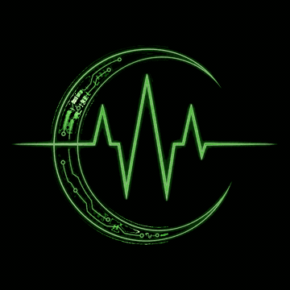

$ Free the thoughts, discipline the acts.
Free up to the gate; accountable past it. Your agent's loop stays wide open to imagine — governance applies only at the moment of commitment, when it touches money, production, or another system. This isn't a cage. It's the thing that lets you trust an agent with consequence.
Free up to the gate; accountable past it.
▸Governance that slows the agent everywhere is just friction wearing a badge.
cyberware governs at one place — the point of commitment — and leaves the rest free. The agent's job is to imagine the not-yet-real. Ours is to make it safe to let that imagination touch the real. We don't review your agent's thoughts. We govern its commitments — and only its commitments.
A framework that makes the imaginable real — not a cage that limits imagination.
Governance here is ENABLEMENT. It is what makes a powerful agent trustworthy enough to actually use.
▸The governor blesses a plan that carries no code and no secrets.
The agent sends govd a CLAIM — skill, perk, variable KEYS — never values, never files, never secrets, never code. govd checks it against ITS OWN trusted registry, model-checks the workflow, and blesses a PLAN: a tool sequence plus each snippet's sha256 plus a ${VAR} wrapper. The agent binds its secrets locally and runs the steps from its own verified registry — that is cooperative mode (any OS). In delegated mode (a Linux body) a separate confined OS principal, exod, runs each step and Ed25519-signs the authoritative status instead; the agent runs nothing. The wire is identical and value-free either way, and the mode is the operator's choice, not the agent's.
agent
govd
And the governor bounds not just what crosses the wire but who may claim what: a token can carry a capability scope — its allowed skills, a tier ceiling, and whether it may reach destructive perks or secrets. A claim outside that scope is denied at the governor and can't be self-approved. On a body, a scoped grant also rides an operator-signed attestation; when the operator enforces it, exod re-checks the attestation and a one-time possession proof off-node, so a compromised governor can neither widen a token nor misattribute a run.
Nothing executable ever crosses the wire — so there's nothing on the wire to steal, and nothing to trust.

▸Identity is the hash of the parts.
Every skill, every file, and the whole chip are content-addressed with sha256; a name-validated resolver and an untracked-file gate close the seams. Change any block and the skill's sha changes — so what executes is provably what the engine blessed. There is no “trust me”; there is only the hash that matches, or doesn't.
A name-validated resolver + an untracked-file gate close the supply-chain seams — what runs is provably what was blessed.
▸Proven, not promised.
Every capability declares typed inputs and outputs; every workflow blueprint is proven deadlock-free by THREE independent provers — TLC, Apalache, and TLAPS. A contract is enforced at execution, not in a README. A deadlock isn't a bug we hope to catch in prod — it's a state the math says can't be reached.
A blueprint is checked by three independent provers before a single line runs. This is the section that earns the word verifiable.
▸Defense isn't a setting — it's a ladder, and each rung is independently checkable.
A research build climbing in the open. The boundary is the kernel and a signature.
▸We dogfood our own governance: cyberware is built through cyberware.
cyberware grades its OWN engine on every build. The pipeline is itself written as an L++ blueprint and model-checked; authenticity is re-verified; the gates are mutation-tested. Once a bug-class is caught, it becomes a standing gate — it can never silently return.
Every build is a run of the engine against itself — so “it works” isn't a claim, it's the last line of the build log. Building is running.
▸One engine, any cartridge.
Skills aren't baked into the engine — they're a swappable registry, the skillChip, vendored as its own MIT-licensed repo. The root manifest (index.json / chip_sha) is the authoritative load set. Compile a single-skill chip or merge skills from many sources — point $CYBERWARE_SKILLCHIP elsewhere and the same governance governs a different feed-stock, unchanged.
The engine is the law; the chip is the content.
▸Agents don't replace software. They become its newest customer.
The lever changes hands — from a human in a UI to a program under contract — but the proven machinery behind it (solvers, numerics, a decade of edge-case polish) is exactly what an agent can't improvise and must consume. More agents means more usage: the shift isn't away from software, it's software gaining a programmatic consumer.
So a vendor's skillChip becomes a third product surface — past the UI (for humans) and the API (for developers): the blessed, correct, metered way an agent may use the software. Selling to agents takes three things no raw API gives you — and they're exactly what the governance layer supplies:
Democratizing skill use concentrates value in skill authorship: whoever encodes the correct, validated way to run the solver becomes the scarce, paid party — paid per use through skill lineage. Professionals don't get cheaper; their value moves from doing the thing to authoring the blessed way of doing it.

Software stops being something humans operate and becomes something agents consume under contract — and the contract layer is the business.